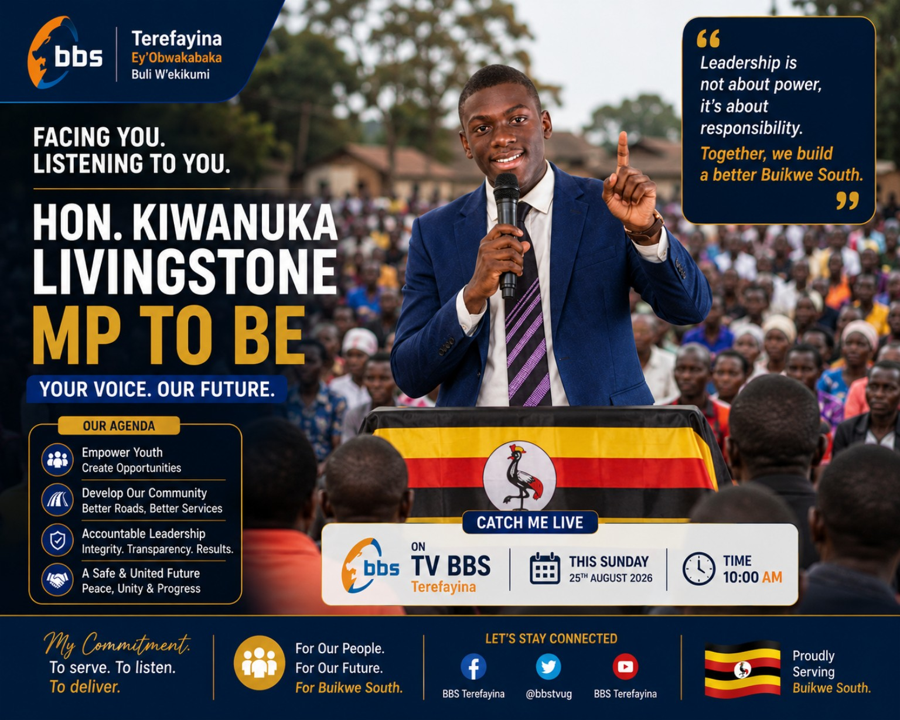
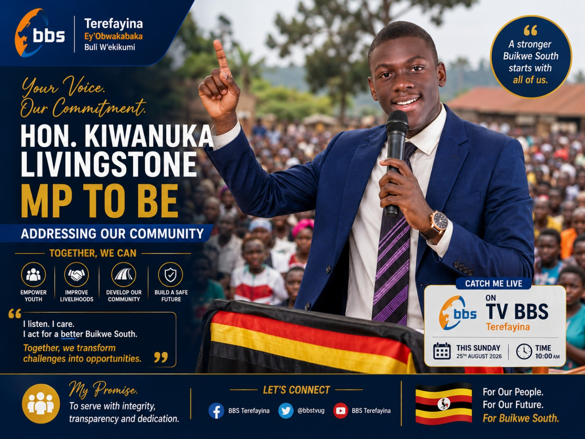
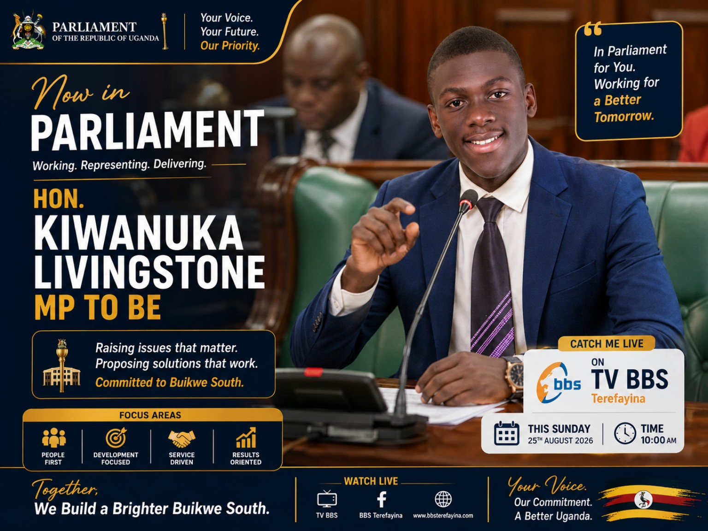
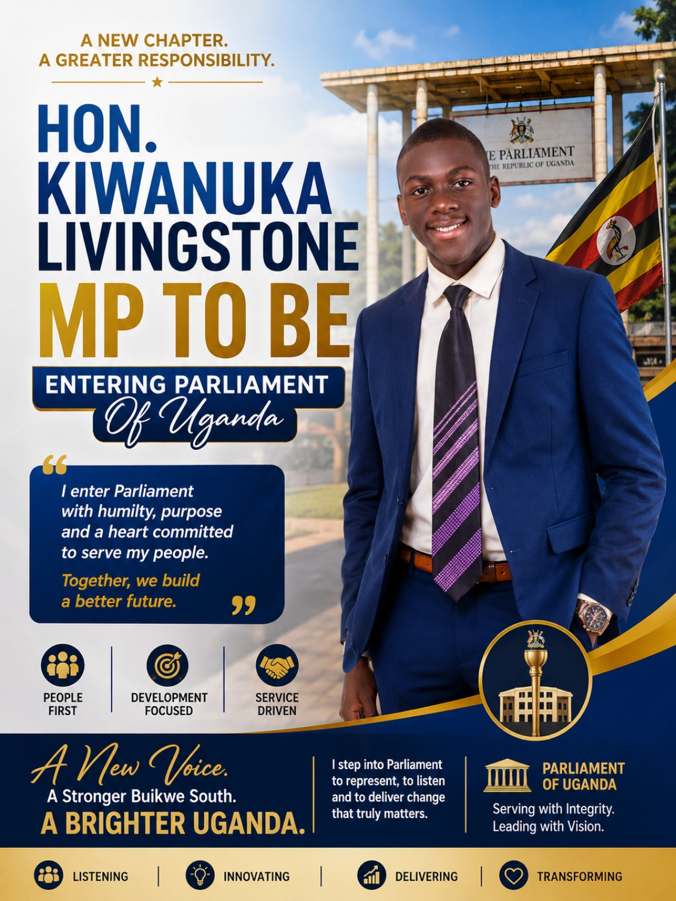
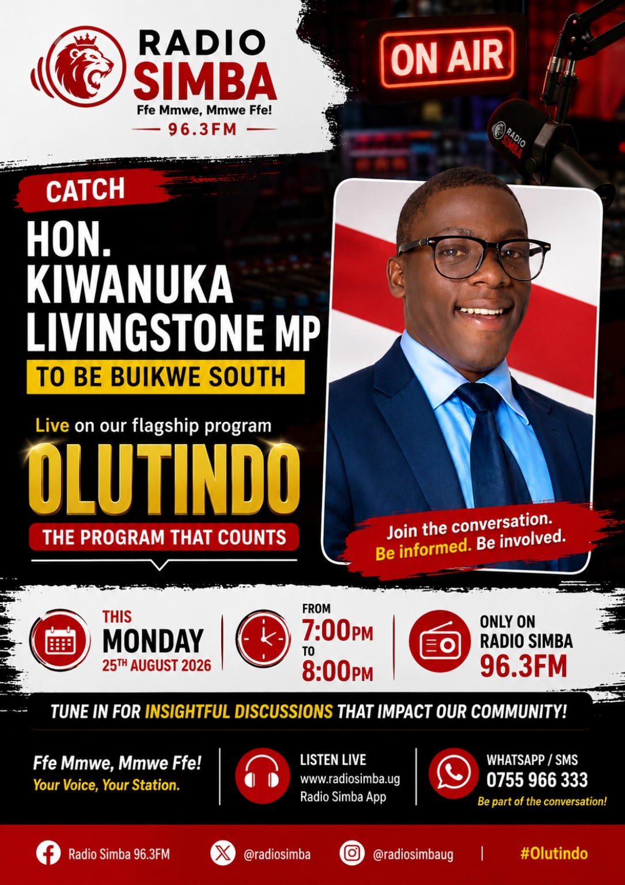
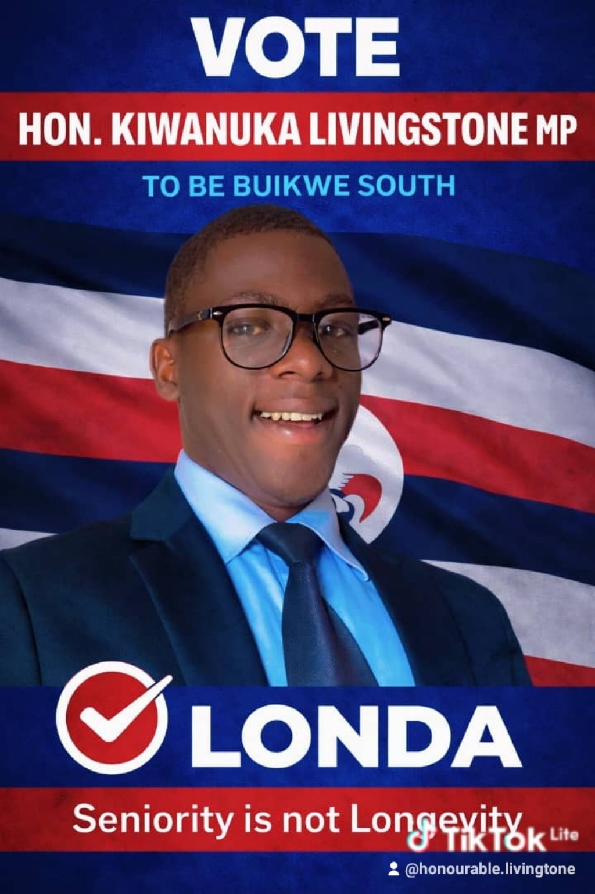

Primary education
Namulesa SDA Primary School — completed Primary Seven and PLE.
A young Ugandan with a passion for leadership, service and practical solutions that improve people's lives.
My name is Kiwanuka Livingstone. I was born on 8 August 2004 in Buikwe District, Uganda. My home area is Namulesa Village, Namulesa Parish, in the Ngogwe area.
I am the child of Kaliro Bosco and Nakajjigo Juliet, and I come from a family of six siblings. I enjoy watching wrestling, following the news and learning about what is happening in my community and the wider world.
Namulesa SDA Primary School — completed Primary Seven and PLE.
Ngogwe Baskerville Secondary School — UCE and UACE.
University studies are part of my future academic plans.
I aspire to become a Member of Parliament representing Buikwe South in the future, with 2031 as my long-term goal. I am also interested in business and office management. I value leadership because I believe it should be expressed through listening, responsibility and service.
Promote better access to quality education and opportunities for learners.
Support stronger, more accessible and dependable health services.
Listen to residents and help bring their concerns into public discussion.
Encourage integrity, transparency and responsible use of public resources.
Selected portraits and creative designs reflecting my interest in public leadership and community service.






Some gallery items are illustrative or AI-created concept designs, not documentary photographs or confirmation of actual parliamentary, television or radio appearances. Event details shown in poster artwork should not be treated as real announcements.
For genuine enquiries and professional connections:
Only publish this number if Kiwanuka agrees to make it publicly available.